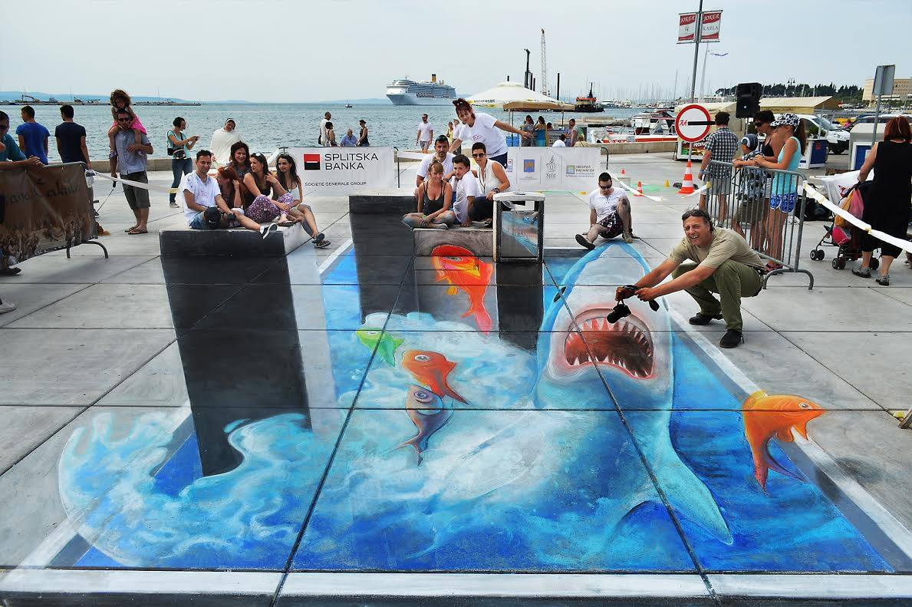

My name is Kemal Konakovic. I was born on July 2, 1988 in Sarajevo. I graduated from the Department of Graphic Arts at the Academy of Fine Arts in Sarajevo. I had more than twenty collective exhibitions and four solo exhibitions. I have exhibited my work in the region and outside the region. I am engaged in 3d street painting and member of the Beton Festival in Sarajevo from 2012-2017. I speak English actively and Italian language passively. Most of my works contain abstract shapes and forms. I always carry with me a small drawing book in which I draw miniatures. Looking forward to hearing from you.
